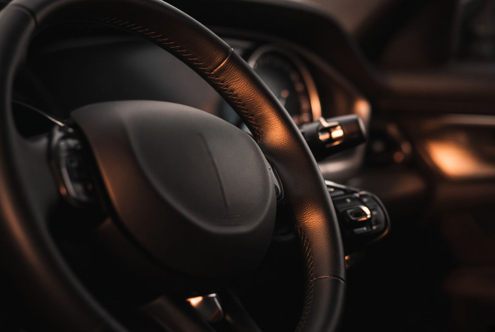

ЛР5 · JavaScript
Траса в русі.
Три автомобілі їдуть по своїх смугах, колесо обертається, світлофор перемикається. Усім керують кнопки нижче.
СтанЗупинено
Швидкість×1.0
Пробіг0 м
Світлофор—

Підказка: клавіша «Пробіл» теж запускає і ставить анімацію на паузу. Бонус — міні-гра «Нічна траса».